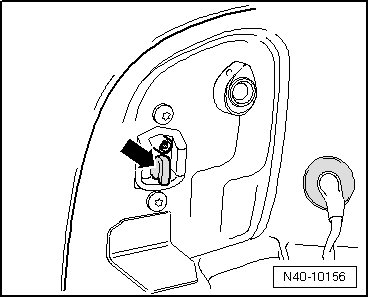
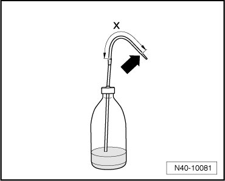
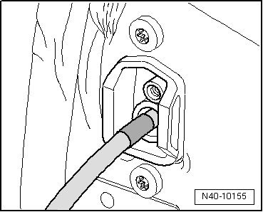
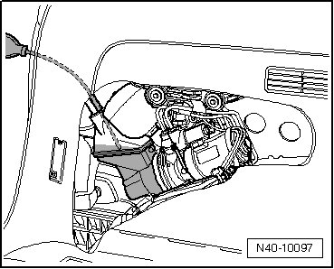

Rear Suspension
Separable Stabilizer Bar Hydraulic System, Checking Oil Level and Filling
Special tools, testers and auxiliary items required
• Vehicle diagnostic, test and information system (VAS 5051)
• Plastic spray bottle (commercially available)
- Depressurize hydraulic system using the.
- Remove left rear tail light.
- Pull sealing plug - arrow - out of filler hole.

- Cut tip - arrow - off plastic spray bottle.

Note dimension - X -, for example using adhesive tape.
Dimension X = 135 mm
- Insert tube of plastic spray bottle into filler hole up to applied marking.

- Fill with enough central hydraulic fluid and power steering fluid (G 002 000) or central hydraulic fluid and power steering fluid (G 004 000 M2) until fluid rises in the hose when drawn by the plastic spray bottle.

- Using plastic spray bottle, siphon oil from reservoir until air fills tube. Note applied marking on tube when doing so.